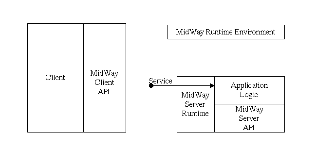

| MidWay Documentation | ||
| Prev | Top | Next |
Middleware is today a really bloated term, that are used on a whole range of different technologies, I'm not going to elaborate on this here. There is an excellent book on most types of client/server technologies called " Client/Server Survival Guide" by Orfali, Harkey, and Edwards. The differences between TP monitors and other types of client/server technologies are explained in a lot of details in the survival guide. I'm going to limit myself here to what MidWay can do. You use MidWay or another middleware for any or all these reasons:
MidWay work by having servers processes that provides a service. A server may provide many services, and many servers may provide the same service. When a client call a service, it is load, and randomness that determine which server that actually handle the request. The components of a MidWay instance are shown here (only one server and one client.)

A service is mapped onto a subroutine or function. Unlike CORBA or
RPC, MidWay has no way to specify the data type of the parameters. In
fact, the only thing you may send to a service, and the only thing you
can send back from the service, is a buffer of n octets(bytes),
like a Perl scalar. I've very specific reasons for not doing any data
presentation.If you are familiar with the OSI reference model, MidWay is exclusively on
layer 5 the session layer. The encoding of the data is entirely
up to you. In many cases you would just pass a C struct, my
recommendation is to encode as URI fields (how html form data is
normally encode): field1=value&field2=value.
Another great way to format the query string is to use XML. XML-RPC have made a spesification
on how to do this.
In the current version of MidWay there are limitations of how big n can be, but this is planned to be removed. However, in order to maintain scalability, keep this as low as possible. 1 Mb is becoming ridicules, you can usually keep this below 10k.
Another very important feature in a SRB is the ability to issue multiple requests without waiting for the responses, as well as issue request that shall not be replied to.
3 tier applications are almost a given when using a SRB. The first tier is the MidWay client, it provides the user interface. The second tier is the MidWay server, and it is usually a database client. The third tier is then the database it self. Normally the second and third tier are sunning on the database server, while the first tier is running os a workstation.
Security is here almost implicit,and is provided by the second tier. If user authentication is required, MidWay can do it. (Not yet implemented). More importantly, only the operations programmed into the second tier are possible, no matter what userid and password the user may have on the database (third tier).
The ability to stop and start servers dynamically make it easy to make a backup or limited functionality server. When you take you database of line for backup, upgrades and such, and the users need to use at least a core set of operations you can put in an offline service that do simplified processing. Almost all 24-7 has some sort of backup/emergency processing. Just in case you miss out on the term 24-7, 24 hours 7 seven days a week availability. Another term that is coming up is "24 forever".
#include <MidWay.h
char * buffer;
int rc, apprcode, bufferlen, flags = 0;
rc = mwattach ("ipc:", "test client", userid, password, flags); /* connect to a running instance */
/* do the request and get the response immediately */
rc = mwcall ("Service", "Hello Server", 0, &buffer, &bufferlen, &apprcode, flags);
Now in the server you need
That's pretty much all you need to do, except to make sure that mwd(1) is running. Servers must run with the same userid as the mwd(1) . Note that the main() in the server is provided in the mwserver program.#include <MidWay.h
/* the service rutine, "application logic" */
int servicehandler(mwsvcinfo * si)
{
if (strcmp("si->data", "Hello Server") == 0) {
mwreply("Hello Client", 0, MWSUCCESS, appreturncode);
return MWSUCCESS;
}
mwreply("FAIL", 0, MWFAILURE, -1);
}main()
{
mwattach("ipc://", "test Server", NULL, NULL, MWSERVER); /* attach as a server, the MidWay daemon, mwd, must run as the same uid.*/
mwprovide("Service", servicehandler flags = 0); /* provide the service "Service" and map it to the C function servicehandler */
mwMainLoop(); /* Wait eternally on request to my provided services. */
}
A note on the URI used here in mwattach ("ipc://",...).MidWay uses system V ipc to communicate among the participants. For servers ipc as protocol are the only one that is going to be legal for a long time, probably forever. I'll add http for clients pretty soon, mostly because http is a request/response protocol. I'll use Apache on the server side, an Apache module is pretty high on my todo list. Both for clients and for using MidWay services to generate HTML. However I must at some point define a native MidWay protocol, foremost for gateways between two running MidWay instances, but also for transactions .
| Prev | Top | Next |
| © 2000 Terje Eggestad | ||